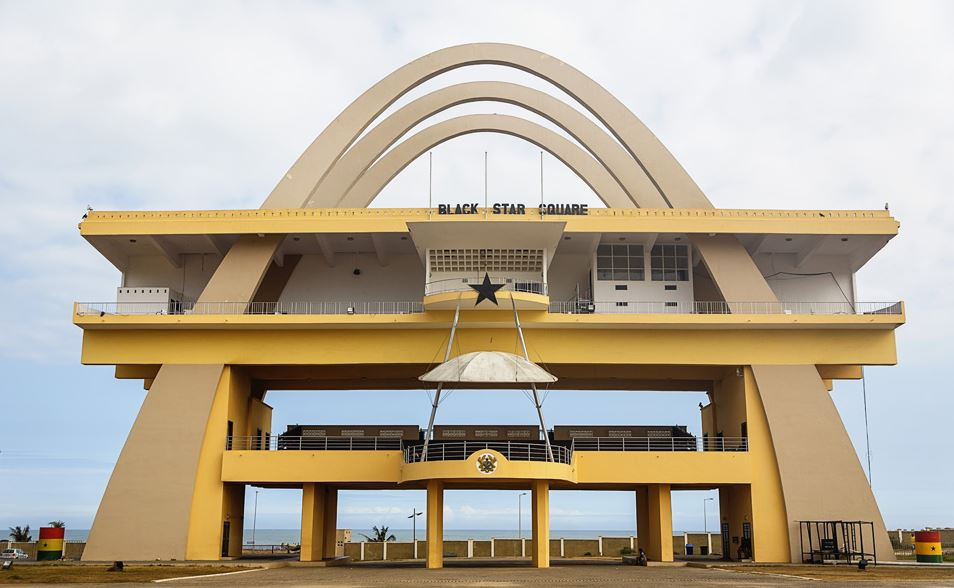
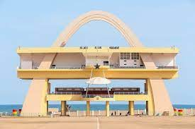
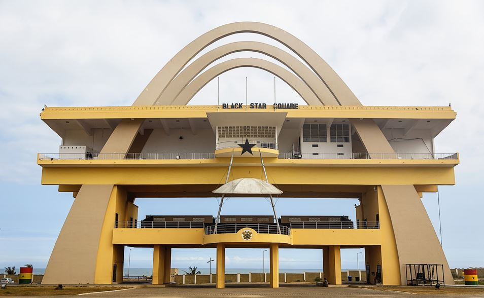
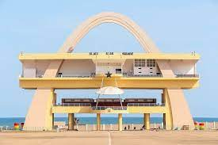

Black Star Square
A monumental square for national events and parades.
About Black Star Square
Black Star Square, also known as Independence Square, is a large public square in Accra, Ghana, bordered by the Accra Sports Stadium and the Kwame Nkrumah Mausoleum. Completed in 1961 for the state visit of Queen Elizabeth II, it is used for national celebrations and military parades.
The square is dominated by the Independence Arch and the Black Star Monument, both symbols of Ghana's independence. It's a vast open space that can hold a significant number of people, making it ideal for large gatherings.
Things to See and Do
- Admire the grandeur of the Independence Arch.
- Reflect at the Black Star Monument.
- Witness national parades or events if scheduled.
- Take in the sheer scale of the square.
 


